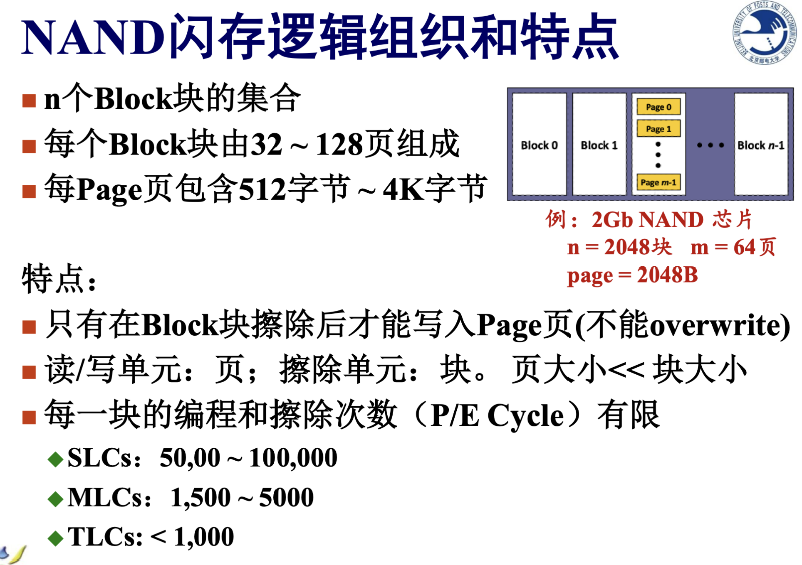

存储器的分类
- 按照介质分类：
- 半导体存储器、磁介质存储器、光存储器；
- 按照存储器与CPU的耦合程度：
- 内存（主存 + cache）、外存；
- 按照存储器的读写功能：
- 读写存储器RWM；
- 只读存储器ROW；
- 按照掉电后存储的信息是否保持：
- 易失性；
- 非易失性；
- 按照数据存取的随机性：
- 随机存取RAM：指随机给定一个地址就可以拿到数据并与前一个访问的地址无关；
- 顺序存取SAM：比如磁带；
- 直接存取DAM：确定区域后顺序存取；
- 按照半导体存储器的信息存储方法：
- 静态Static；
- 动态Dynamic；
- 习惯分类：
- RAM vs. ROM；
- SRAM vs. DRAM(内存条) vs. 闪存；
- MASK ROM(掩膜) vs. PROM(可编程)；
- EPROM(可擦除PROM)
- 紫外线擦除；
- 电擦除；
- EPROM(可擦除PROM)
存储器目标
- 大容量；
- 高速度；
- 低价格；
层次结构存储器系统
并行技术
- 单体多字：一个读写体，每次存取多个字；
- 多体单字：多个读写体，交叉编址，向多个地址读取内容；
存储容量
存储容量 = 存储字数（存储单元数） \(\times\) 存储字长（每单元的比特数）
存取速度
- 访问时间/存取时间\(T_A\)：从启动一次存储器操作到该操作完成所经历的时间，即从存储器接收到读/写命令到信息被读出或写入完成所需的时间；
- 存取周期\(T_m\)：存储器在连续读写过程中，完成一次完整的读/写操作所需的全部时间，即CPU连续两次独立访问存储器的最小时间间隔；
- 存储器带宽：单位时间内能传输的信息量；
注：存取周期\(T_m\)一般大于存取时间\(T_A\)，因为存储器完成读/写操作后一般需要一段恢复内部状态的复原时间，即\(存取周期 = 存取时间 + 恢复时间\)；
SRAM
基本结构
基本时序
读周期
写周期
只读存储器
特点
- 只能读出，不能写入；
- 不易失；
- 只读存储器写入数据的过程称为对其编程；
分类
- 掩模式只读存储器：不能进行重写；
- 一次可编程只读存储器PROM：
- 双极型PROM：
- 熔丝烧断型；
- PN结击穿型；
- 双极型PROM：
- 多次可编程只读存储器；
- 光擦除EPROM：利用雪崩注入，擦除是对所有存储单元进行，不能实现选择性擦除；
- 电擦除EEPROM/E\(^2\)PROM；
- 电改写EAROM；
- 闪存Flash Memory；
- NAND闪存：只允许顺序按页(Page)存取数据；
- NOR闪存：具有完整地址/数据结构，能快速随机地读取任一单元；
NAND vs. NOR
注：任何计算机必须有ROM，即必须要有经过编程的ROM（称为Bios，它保存着计算机最重要的基本输入输出的程序、开机后自检程序和系统自启动程序），用于计算机程序的初始装入，如果都是RAM，那么计算机初始状态下根本不存在程序和数据；
并行存储器
双端口存储器DPRAM
基本结构
实例：IDT7133
注：其中Busy Flag用于控制能否访问，防止左右端口同时访问同一个地址造成冲突；Busy = 0表示不能访问；仲裁方式如下：